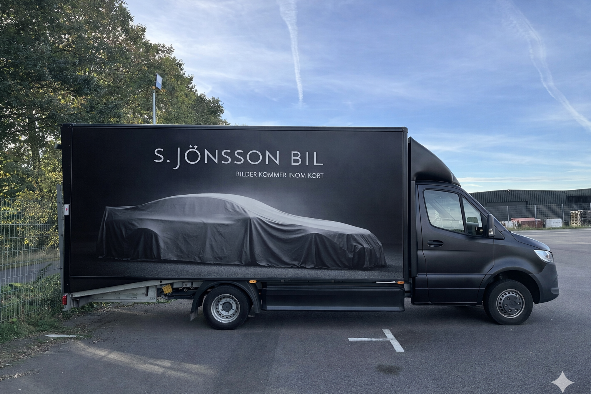
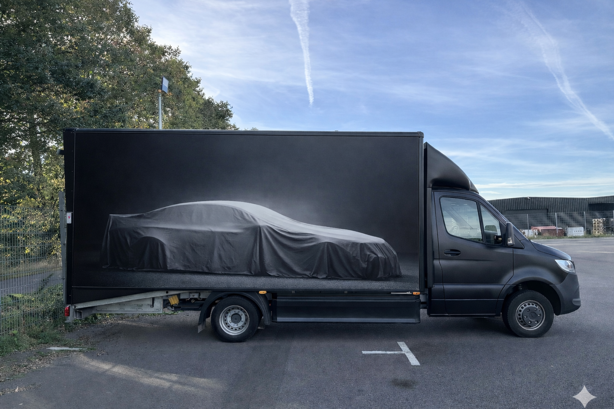

Sidovy – full wrap med logotyp och dolt fordon

Sidovy – avskalad version utan logotyp

Bakvy – QR-kod med budskap för nyfikenhet i trafik

Designreferens – mystiskt formspråk

Designreferens – premium, mörk estetik